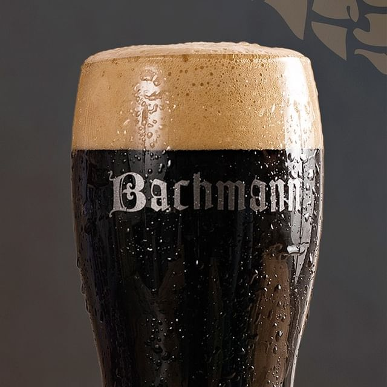

Rubia
De sabor amargo, que se fabrica con granos de cebada germinados u otros cereales cuyo almidón se fermenta en agua con levadura (principalmente Saccharomyces cerevisiae o Saccharomyces pastorianus) y se aromatiza a menudo con lúpulo, entre otras plantas. Es la bebida alcohólica más consumida del mundo, y una de las bebidas más consumidas, solo por detrás del agua y el té
Negra
Es un tipo de cerveza lager alemana opaca, de color muy oscuro y sabor fuerte que recuerda al chocolate o al café. Aunque tienen un sabor parecido, son más suaves y menos amargas que las stouts o porters británicas, debido al uso de levadura lager en lugar de ale y a que están hechas de malta tostada, lo que les da su color oscuro.
Roja
Es un tipo de cerveza ale original de Irlanda. Su ligero color rojo es debido al tostado de la cebada además de la malta. Las cervezas normalmente son bajas en alcohol (3,5 % es lo típico), aunque se elaboran versiones más potentes para su exportación.
India pale ale
La India pale ale (comúnmente abreviado como IPA) es un estilo de cerveza de tradición inglesa que se caracteriza como una ale pálida y espumosa con un alto nivel de alcohol y de lúpulo. La creación de la India pale ale durante la década de 1790.